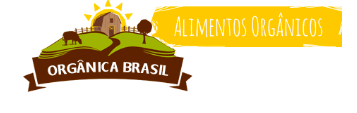
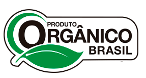

Verduras |
preços |
Frutas |
Preços |
Legumes |
preços |
| Alecrim; mo |
R$ 3.50 | Abóbora Japonesa; 500 Kg |
R$ 6.50 | Banana prata; Kg |
R$ 9.00 |
| Alface Lisa; mo |
R$ 3.50 | Açafrão (Curcuma); 100g |
R$ 6.00 | Limão Caipira; 500g |
R$ 5.50 |
| Azedinha; mo |
R$ 4.00 | Alho; 100g |
R$ 8.50 | Limão Taiti; 500g |
R$ 5.50 |
| Couve; mo |
R$ 3.50 | Alho Poró; Unidade |
R$ 5.00 | Erva Cideira; mo |
R$ 3.50 | Patata inglesa; 500g |
R$ 6.00 | Espinafre; mo |
R$ 5.00 | Cebola Amarela; 500g |
R$ 6.50 | Rúcula; mo |
R$ 4.00 | Cenoura; 500g |
R$ 5.50 |
|  | Orgânica Brasil |
Nosso Serviços |
Produtos certificados |
A Opgânica Brasil oferece delivery |
Sobre o ProjetoProdutos orgânicosOrgânicos no BrasilOnde encontrarFale Conosco |
Monte sua cestaComo fucionaBairros atendidosTermos e Condições |
 |